Jual Traktor di Jakarta
Traktor roda empat dan traktor hybrid Zoomlion, langsung dari distributor resmi di Jakarta Timur.
Tanya Harga Traktor via WhatsAppTractors for Sale in Jakarta
Zoomlion four-wheel and hybrid tractors, direct from the authorised distributor in East Jakarta.
Ask for Tractor Prices on WhatsAppMencari traktor di Jakarta? PT Diesel Agri Sukses Sejahtera (DASS) adalah distributor resmi traktor Zoomlion yang berlokasi di Cakung, Jakarta Timur. Kami menyediakan traktor untuk sawah, perkebunan, dan lahan kering, dari kelas kecil hingga traktor hybrid bertenaga besar.
Tim kami memberikan konsultasi teknis dan brosur lengkap untuk membantu Anda memilih traktor yang sesuai luas lahan dan jenis pekerjaan.
Kenapa Membeli Traktor di DASS?
Distributor Resmi
Unit resmi dari prinsipal, disertai garansi dan dokumen lengkap.
Spesifikasi Lengkap
Data teknis, brosur PDF, dan fitur bandingkan unit tersedia langsung di website.
Tanya Cepat via WhatsApp
Tanya harga, minta brosur, atau konsultasi langsung dengan tim kami.
Konsultasi Teknis
Kami bantu menentukan unit yang sesuai luas lahan dan jenis pekerjaan.
Looking for a tractor in Jakarta? PT Diesel Agri Sukses Sejahtera (DASS) is the authorised Zoomlion tractor distributor based in Cakung, East Jakarta. We supply tractors for rice fields, plantations, and dryland farming, from compact models to high-powered hybrid tractors.
Our team provides technical advice and full brochures to help you choose the right tractor for your land and type of work.
Why Buy a Tractor from DASS?
Authorised Distributor
Genuine units from the principal, with warranty and complete documents.
Full Specifications
Technical data, PDF brochures, and a unit comparison tool right on our website.
Quick Answers on WhatsApp
Ask for prices, request a brochure, or talk directly with our team.
Technical Consultation
We help you choose the unit that fits your land and type of work.
在雅加达寻找拖拉机？PT Diesel Agri Sukses Sejahtera（DASS）是中联重科拖拉机的授权经销商，位于东雅加达Cakung。我们提供适用于水田、种植园和旱地的拖拉机，从小型机型到大马力混合动力拖拉机一应俱全。
我们的团队提供技术咨询和完整宣传册，帮助您根据土地面积和作业类型选择合适的机型。
为什么选择在DASS购买拖拉机？
授权经销商
原厂正品，提供保修及完整文件。
参数齐全
网站直接提供技术参数、PDF 宣传册和机型对比功能。
WhatsApp 快速咨询
询价、索取宣传册或直接与我们的团队沟通。
技术咨询
帮助您根据土地面积和作业类型选择合适的机型。
Pilihan Traktor Zoomlion
Zoomlion Tractor Range
中联重科拖拉机系列

RS1304 / RS1604
RS1304 / RS1604
Traktor

PG2004
PG2004
Traktor

RK504
RK504
Traktor

RK704
RK704
Traktor
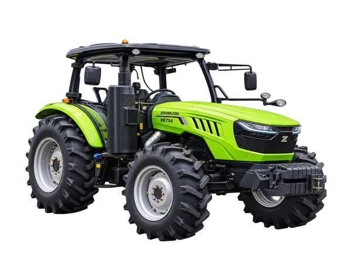
RK754
RK754
Traktor
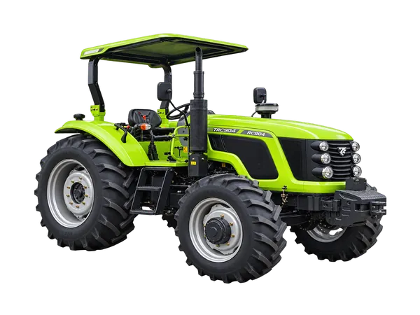
RC904
RC904
Traktor
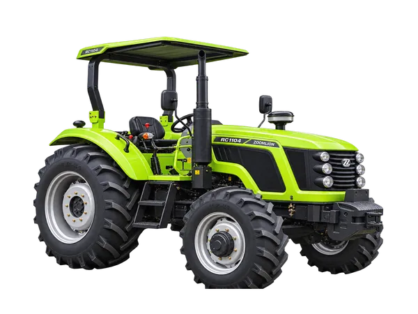
RC1104
RC1104
Traktor
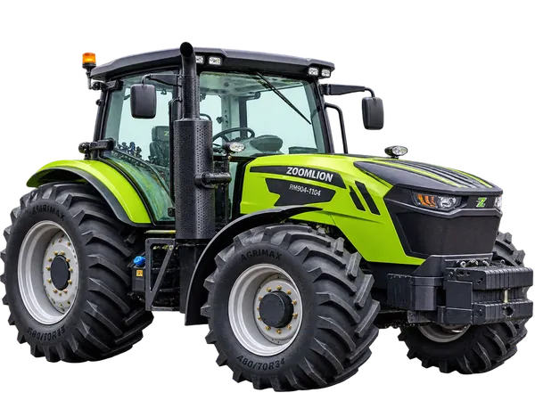
RM904 / RM1104
RM904 / RM1104
Traktor
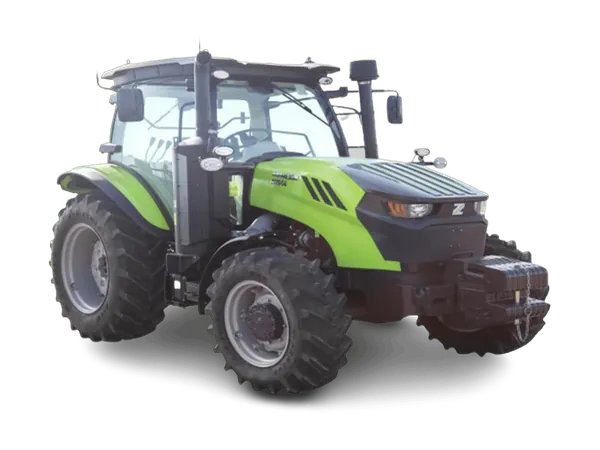
RN904-1
RN904-1
Traktor
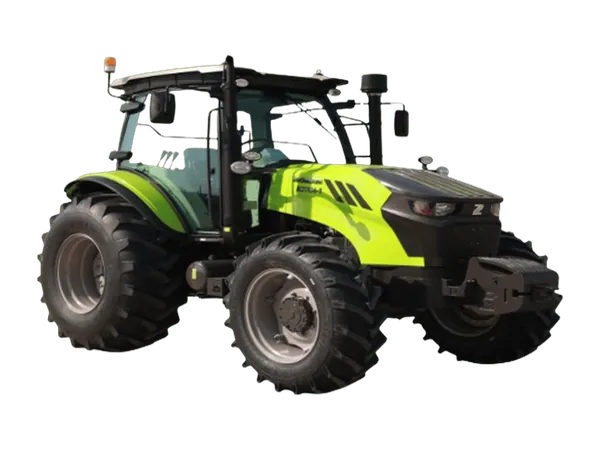
RN1104-1
RN1104-1
Traktor
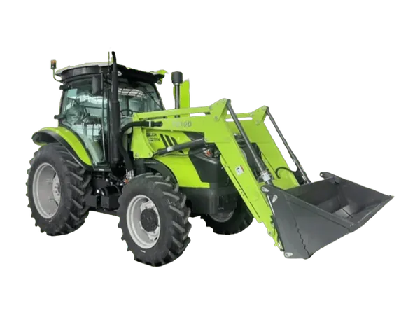
CN1104
CN1104
Traktor
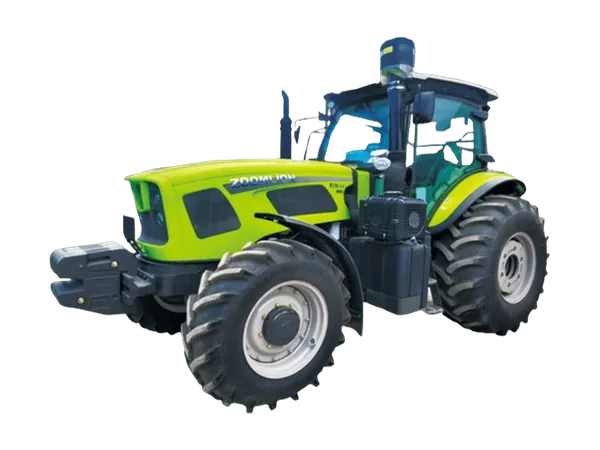
RL1604
RL1604
Traktor
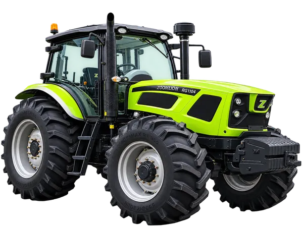
RG1604 / RG1804 / RG2004
RG Series
Traktor
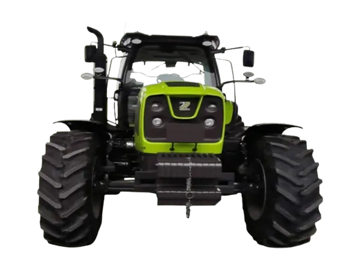
PL1604
PL1604
Traktor
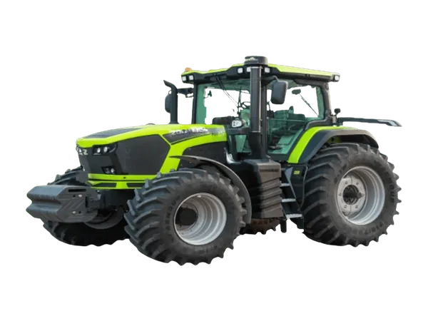
PQ2604 / PQ2754
PQ Series
Traktor
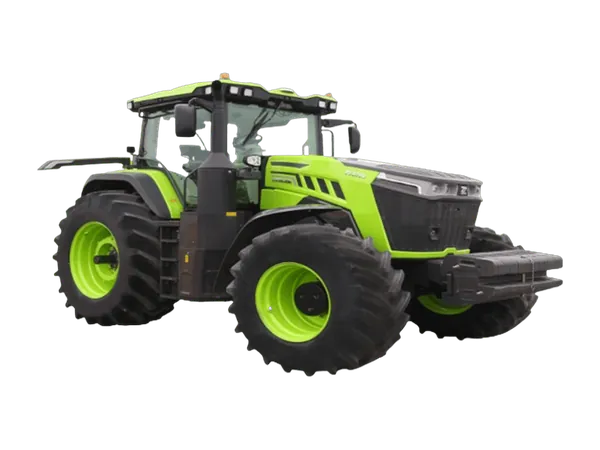
PV3204
PV3204
Traktor
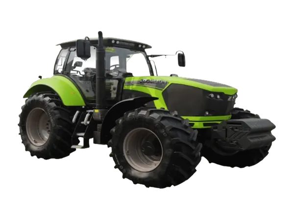
PL2304
PL2304
Traktor
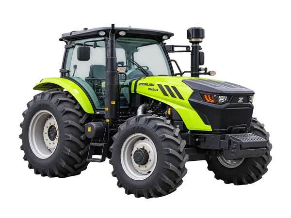
RM804
RM804
Traktor
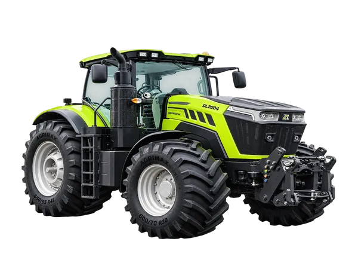
DL2004
DL2004
Mesin Hybrid
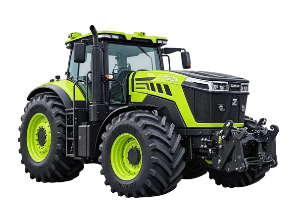
DG2204
DG2204
Mesin Hybrid
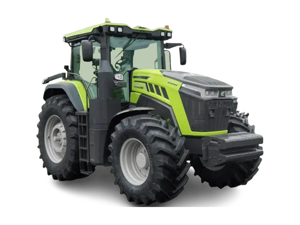
DQ2604 / DQ2754
DQ Series
Mesin Hybrid
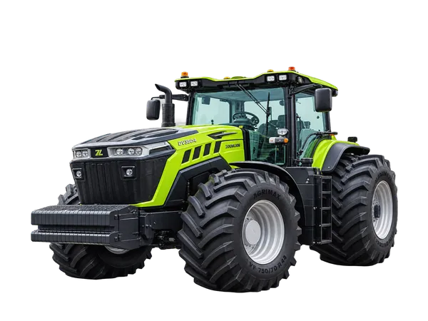
DV3504
DV3504
Mesin Hybrid
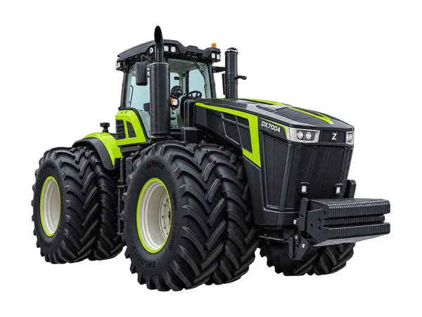
DX7004
DX7004
Mesin Hybrid
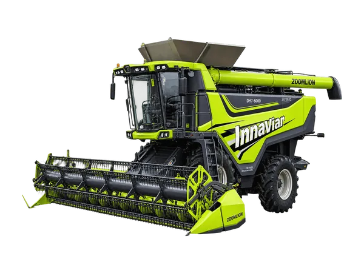
DH7-6000
DH7-6000
Mesin Hybrid
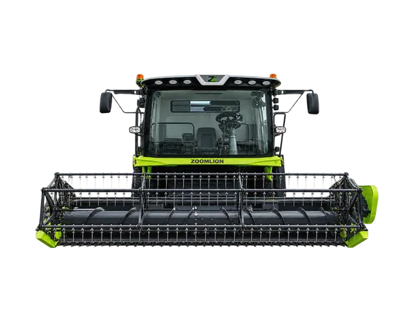
TE100-DH
TE100-DH
Mesin Hybrid
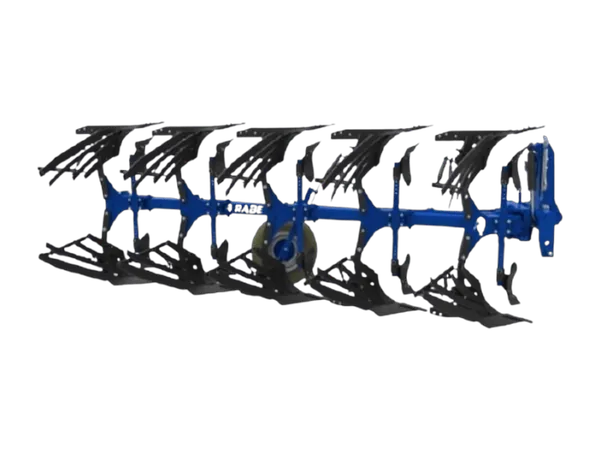
1LF-550T / 560T / 650T / 750–950T / 1050–1350T
Reversible Plow 1LF-550T – 1350T
Implement Traktor
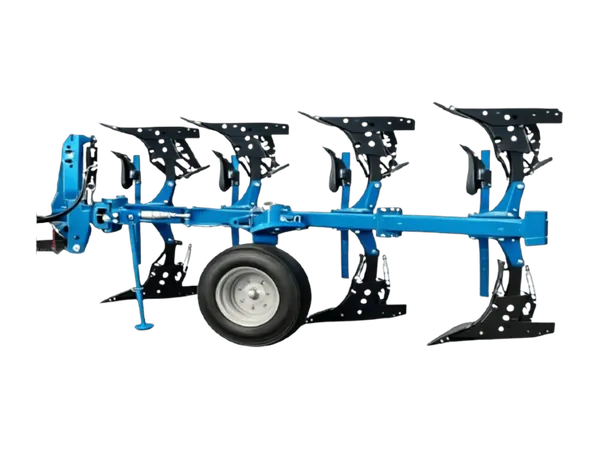
1LF-Q450T / Q550T
Reversible Plow 1LF-Q450T / Q550T
Implement Traktor
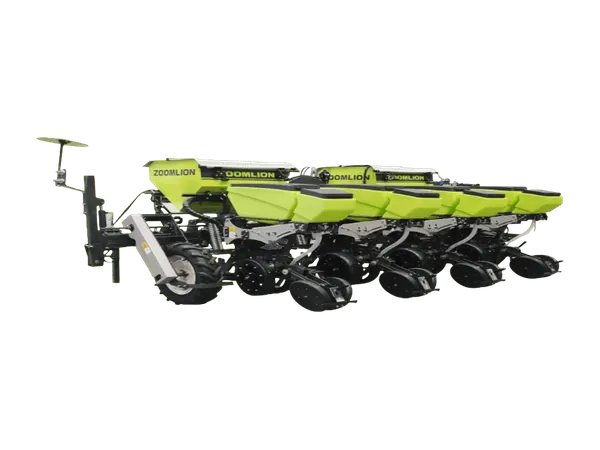
2BMXMF-4A / 6A / 8
Precision Seeder 2BMXM Series
Implement Traktor
Pertanyaan yang Sering Diajukan
Di mana tempat membeli traktor di Jakarta?
Anda bisa membeli traktor Zoomlion di PT Diesel Agri Sukses Sejahtera, Jalan River Garden Boulevard No. 19B, Cakung Timur, Jakarta Timur. Hubungi kami lewat WhatsApp 0811-1660-2926 untuk konsultasi dan penawaran harga.
Berapa harga traktor Zoomlion?
Harga traktor tergantung model, kelas tenaga, dan implement yang dipilih. Hubungi tim kami untuk mendapatkan penawaran harga terbaru.
Traktor apa yang cocok untuk sawah?
Pilih traktor dengan tenaga dan ukuran yang sesuai luas sawah, serta ban yang cocok untuk lahan berlumpur. Tim kami siap membantu memilih unit yang tepat.
Baca Juga
- Kenali Jenis-Jenis dan Cara Pilih Ban Traktor yang Tepat
- Cara Ganti Oli Traktor yang Benar dan Hemat Biaya
- Traktor Sering Selip? Ini Cara Pakai Differential Lock
- 6 Keunggulan Hydraulic Power Steering pada Traktor
Lihat Juga
Frequently Asked Questions
Where can I buy a tractor in Jakarta?
You can buy Zoomlion tractors from PT Diesel Agri Sukses Sejahtera, Jalan River Garden Boulevard No. 19B, Cakung Timur, East Jakarta. Contact us on WhatsApp 0811-1660-2926 for advice and a quotation.
How much does a Zoomlion tractor cost?
The price depends on the model, power class, and implements you choose. Contact our team for the latest quotation.
Which tractor is best for rice fields?
Choose a tractor whose power and size match your field area, with tyres suited to muddy ground. Our team can help you choose the right unit.
Read Also
- Know the Types of Tractor Tyres and How to Choose the Right One
- How to Change Tractor Oil the Right Way and Save Money
- Tractor Keeps Slipping? Here's How to Use the Differential Lock
- 6 Advantages of Hydraulic Power Steering on Tractors
See Also
常见问题
在雅加达哪里可以买到拖拉机？
您可以在PT Diesel Agri Sukses Sejahtera购买中联重科拖拉机，地址：东雅加达Cakung Timur，Jalan River Garden Boulevard No. 19B。如需咨询和报价，请通过WhatsApp 0811-1660-2926联系我们。
中联重科拖拉机多少钱？
价格取决于型号、功率等级和所选农具。请联系我们的团队获取最新报价。
哪种拖拉机适合水田？
请选择功率和尺寸与田块面积相匹配、并配备适合泥地轮胎的拖拉机。我们的团队可以帮助您选择合适的机型。